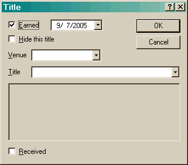

The Title dialog allows you to create or edit a title.

The Earned checkbox denotes that you have actually earned this title.
The Hide this title checkbox allows you to hide a title. This can be convenient when you have earned a higher level title, for instance an AKC MX title means you have already earned the NA, OA and AX titles.
The Venue list contains all currently configured venues. Once you have selected a venue, the titles that can be earned in that venue will then be displayed.
The Received checkbox allows you to specify that you have actually received the title certificate.
Hiding works very well for titles that you cannot earn. For instance, when USDAA created the new Novice and Advanced titles, any dog currently in Masters could not earn that title. So by creating an entry for that title and unchecking Earned and checking Hide, that then removes the title from the list of titles to select from in the future.